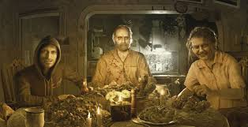
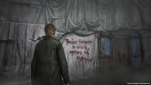
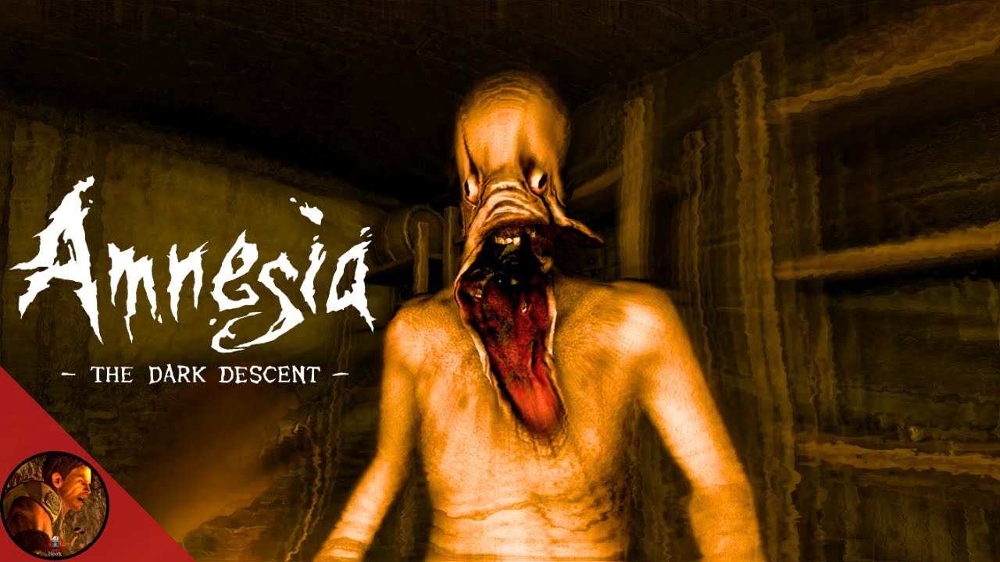

Top 1: Resident Evil 7: biohazard Este jogo marcou uma mudança para a série, adotando uma perspetiva em primeira pessoa e focando-se num terror mais íntimo e visceral, combinado com elementos de survival horror.

Top 2 Silent Hill: Considerado um dos jogos mais assustadores de todos os tempos, Silent Hill 2 é aclamado pelo seu terror psicológico profundo, atmosfera sombria e narrativa complexa.

Top 3 Alien Isolation: O jogo destaca-se pela forma como simula a presença aterradora e imprevisível de um xenomorfo, o que cria uma tensão constante e um medo palpável de ser caçado.

Top 4 Amnesia the dark descent: Um jogo focado na exploração e fuga, onde você não pode lutar contra as ameaças, aumentando a sensação de desamparo e desespero.